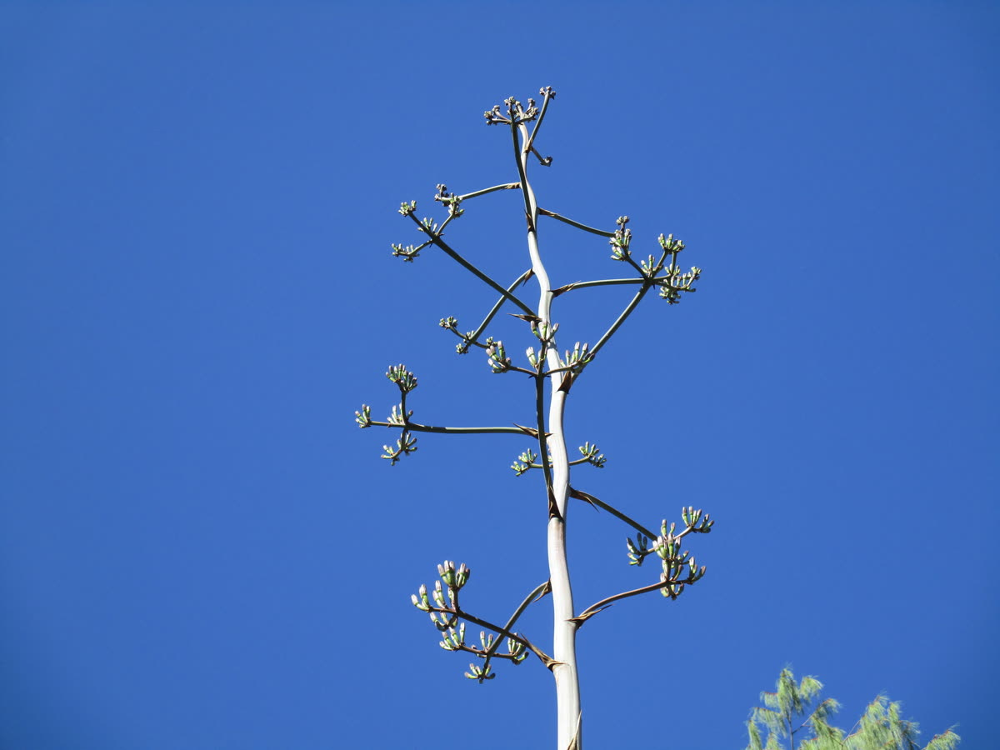

Video
Paso 01 · Recolección
Recolección de semilla
Trabajamos con agave maximiliana, la especie silvestre de la sierra de Mascota. Colectamos las semillas de plantas sanas para garantizar la siguiente generación de raicilla artesanal de los Hermanos Arrizón.